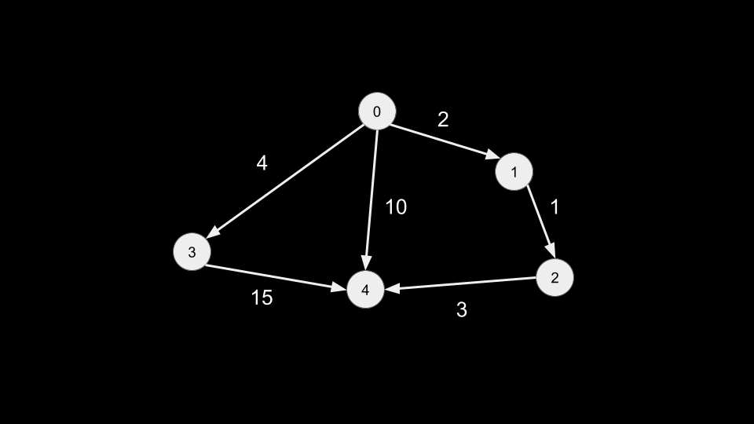
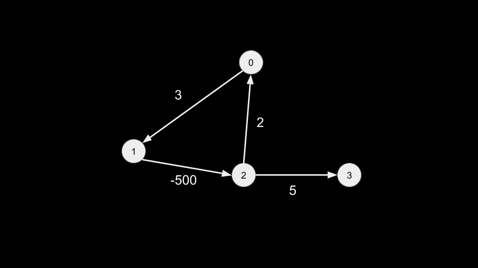

В этом курсе мы уже рассмотрели множество задач с графами. В этих задачах мы обычно имели дело с невзвешенными графами. Когда мы использовали BFS для поиска «кратчайшего» пути, мы находили путь с наименьшим количеством ребер.
Взвешенный граф — это граф, в котором ребрам присвоено некоторое значение (вес). В качестве примера возьмите следующий график.

Если бы мы начали с узла 0 и хотели найти кратчайший путь к узлу 4, каким был бы ответ? Есть 3 разных пути:
Путь 3 имеет наименьшее количество ребер, но является ли он «самым коротким» путем? Мы определяем вес пути как сумму весов ребер. Вес каждого пути равен:
Как видите, путь 1 (имеющий наибольшее количество ребер) имеет наименьший вес. Обычно, когда мы говорим о «кратчайших» путях на взвешенных графах, нас интересуют веса путей.
Как и во многих задачах с графами, за проблемой, скорее всего, стоит история, которую вам нужно будет распознать. Например, каждый узел — это город, каждое ребро — это шоссе, за проезд по которому нужно платить, и вы хотите найти путь из одного города в другой с наименьшей ценой.
Мы узнали, что BFS — отличный алгоритм для поиска кратчайших путей, но BFS работает только с невзвешенными графами. Невзвешенные графы можно рассматривать как взвешенные графы, у которых все веса равны 1. Взвешенные графы сложны, потому что когда у пути меньше ребер, это не обязательно означает, что он имеет меньший вес. Мы не можем применить привычную нам BFS к взвешенным графам.
Существует множество алгоритмов, которые можно использовать для поиска кратчайших путей во взвешенных графах. Пожалуй, самым известным, эффективным и простым в реализации является алгоритм Дейкстры.
Алгоритм Дейкстры фокусируется на одном исходном узле и находит кратчайшее расстояние до любого другого узла графа от источника.
Идея алгоритма Дейкстры заключается в использовании минимальной кучи для хранения узлов, подобно тому, как мы использовали стеки в DFS и очереди в BFS. Для каждого узла мы также будем отслеживать вес пути, используемого для достижения узла из источника. Минимальная куча будет оценивать каждый элемент по этому весу. На каждой итерации мы извлекаем узел, извлекая его из минимальной кучи, что дает нам узел с путем минимального веса.
Мы также сохраняем минимальное расстояние от источника для каждого узла. Если наши узлы пронумерованы от 0 до n — 1, для этого удобно использовать массив distances длиной n. Первоначально все значения в этом массиве будут иметь большое значение (например, бесконечность), за исключением источника, который будет иметь значение 0.
На каждом node мы перебираем соседей. Рассмотрим текущее расстояние от источника (которое мы храним в каждом узле в куче) как curr_dist. Для данного соседа nei считайте вес ребра node -> nei как weight. Переход к этому соседу приведет к тому, что вес пути будет равен dist = curr_dist + Weight. Есть две возможности:
Следующий аннотированный псевдокод реализует алгоритм Дейкстры.
curr_dist, node = heap.pop()
if (curr_dist > distances[node]) {
// optimization step: ignore current path if we found a better one
continue;
}
for (nei, weight: [edges from node]) {
dist = currDist + weight
// add neighbor to heap if it creates a shorter path
if (dist < distances[nei]) {
distances[nei] = dist
heap.push((dist, nei))
}
}
}Как и в итеративной DFS со стеком или BFS с очередью, мы храним узлы для обхода в куче. Мы используем distances, чтобы отслеживать кратчайшее расстояние до каждого узла, который мы нашли на данный момент, и постоянно пытаемся улучшить каждый узел.
Example: 743. Network Delay Time
Вам дана сеть из n узлов, помеченных от 1 до n. Вам также
предоставляется times, список времени в пути в
виде направленных ребер. Каждый элемент в times имеет формат [u, v, w], что указывает на то,
что сигналу
требуется время w, чтобы пройти от u до v.
Вам также дано целое число k. Мы отправим сигнал из узла k. Возвращает минимальное
время, необходимое
каждому узлу для получения сигнала. Если все узлы не могут получить сигнал, верните -1.
Здесь у нас есть граф, заданный как массив ребер, где каждое ребро имеет дополнительное целое число, представляющее вес ребра. Мы можем создать структуру данных graph, как мы это делали на протяжении всего курса, где каждое ребро также имеет вес, связанный с соседом.
Ответ на задачу можно найти, найдя кратчайший путь от k до любого другого узла и затем взяв максимальное из этих значений времени. Алгоритм Дейкстры идеально подходит для поиска кратчайшего пути от k ко всем остальным узлам. Мы можем просто запустить Дейкстру по k, а затем вернуть максимальное значение distances. Если максимальное значение distances является начальным большим значением (например, бесконечностью), это указывает на то, что узел недоступен из источника, и поэтому мы должны вернуть -1.
Примечание: узлы помечены как 1-индексированные. Когда мы строим граф, мы вычитаем 1 из каждого узла, чтобы сделать их нулевыми.
graph = defaultdict(list)
for x, y, z in times:
graph[x - 1].append([y - 1, z])
distances = [inf] * n
distances[k - 1] = 0
heap = [(0, k - 1)]
while heap:
curr_dist, node = heappop(heap)
if curr_dist > distances[node]:
continue
for nei, weight in graph[node]:
dist = curr_dist + weight
if dist < distances[nei]:
distances[nei] = dist
heappush(heap, (dist, nei))
ans = max(distances)
return ans if ans < inf else -1
Временная сложность алгоритма Дейкстры зависит от того, как реализована ваша куча. Однако в целом это можно записать так:
O((V+E)⋅logV)
Где E — количество ребер и V — количество вершин/узлов в данном графе. Операции с кучей стоят до О (logV). Есть O(V) операции pop и O(E) push-операции
Пространственная сложность O(V) для кучи и distances.
Обратите внимание, что эти сложности не учитывают создание графа, а только запуск Дейкстры.
Дейкстру следует использовать только на графах без циклов отрицательного веса. Если есть циклы с отрицательным весом, алгоритм может работать не так, как ожидалось. В качестве примера возьмем следующий граф:

Если вы попытаетесь запустить Дейкстру на этом графе с 0 в качестве источника, код никогда не завершится! Это потому, что существует цикл с отрицательным весом: цикл 0 -> 1 -> 2 имеет вес -495. Когда мы впервые достигнем узла 2, у нас будет curr_dist = -497. Таким образом, мы снова посетим 0 и обновим distance[0] = -495. В следующий раз, когда мы посетим 2, у нас будет curr_dist = -992. Каждый раз, когда мы проходим цикл, расстояние пути уменьшается, и код никогда не перестанет работать.